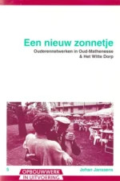
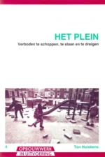
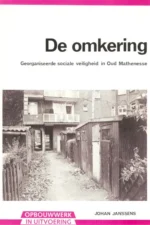
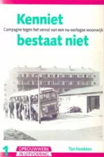
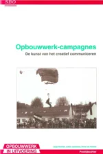
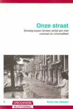
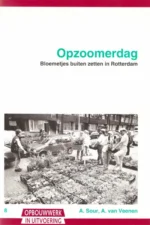
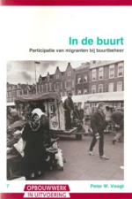
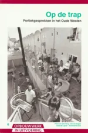

Skip to content
Opbouwwerk in Rotterdam
Documentatie van Rotterdams opbouwwerk 1965-2010
Menu
Home
Deel 1
Deel 2
Deel 3
Deel 4
Deel 5
Deel 6
Steiger, vakblad voor de Rotterdamse wijken
Steiger
downloads
Deel 7
Opbouwwerk in uitvoering revisited
Opbouwwerk in uitvoering – downloads
Epiloog
Reünie
Van onderop, opbouwwerk forever
Over
Opbouwwerk in uitvoering – downloads








